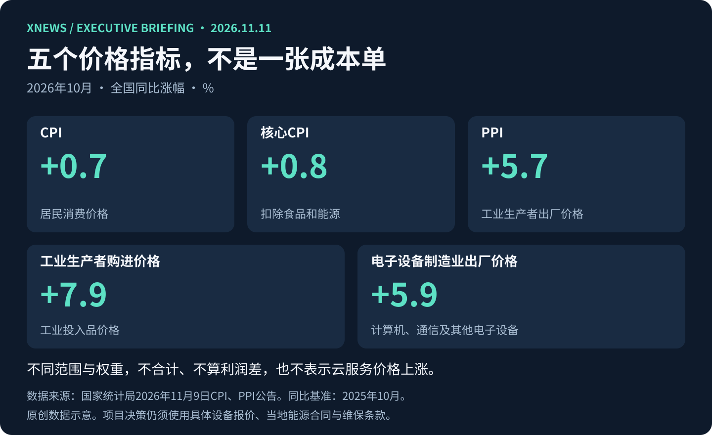

本期范围与证据口径
北京时间2026年11月11日。实际检索截止：2026年11月11日08:58:56（北京时间）。优先窗口：11月10日08:58:56至11月11日08:58:56；扩展窗口：11月8日08:58:56至11月11日08:58:56。10月价格数据及缺少发布时分的澳大利亚公告，明确按72小时补充处理。
本期精选5条，其中3条中国大陆、2条全球动态。已回看11月4日至10日站内高管简报及11月11日独立AI日报：本期五条均不与既有选题重复，不把旧文转发算新事件。湖北本轮新线索未取得足够原始证据，未为地区配额凑数。
下文“摘要”是来源事实或有明确归属的报道；“为什么重要”“业务影响”“建议”是编辑分析。采购公告不等于中标或收入，拟议政策不等于生效规则。南网使用官方索引及可读转载，光模块使用路透报道的可读转载，逐条披露限制。
图片说明：本期只使用原创SVG信息图与文字图解，未转载第三方照片。图中数字来自国家统计局，口径与来源在图注列明。
读图先区分：三种不同证据状态
原创编辑框架，依据本期来源整理；不是评级、概率预测或投资建议。
- 采购与统计
已发布 ≠ 已兑现
国开行/南网是招标阶段；CPI/PPI是全国统计，不能直接代表项目报价。
- 路透报道
据报 ≠ 官方确认
光模块限制仍属拟议，具体门槛与适用范围未形成已读最终规则。
- 澳大利亚政策
拟立法 ≠ 已生效
监管方向已经宣布，具体细节仍待设计与咨询。
01｜北京：国开行再采两条智算芯片路线，先看授权与维保责任
事件及新增公告：2026年11月10日；来源发布：11月10日15:47:43（北京时间）。时效：过去24小时。项目名称中的“2025年”不是本次公告日期。
摘要： 国开行发布智算服务器及配套网络设备二次采购公告，列示含税预算15076.03万元。项目计划覆盖三条信创智算芯片路线，第一次已确定华为，本次继续采购另外两条路线，设备包含五年维保。文件获取截至11月18日17:00，投标截至12月1日09:00，均为北京时间。[1]
为什么重要： 多路线采购使竞争不只取决于硬件数量，还涉及模型适配、迁移成本和持续供货能力。公告反映的是采购需求，不证明任何路线已完成大规模生产验证。
业务影响： 金融信创交付团队需要同时具备服务器原厂与芯片厂支持。公告要求非原厂投标人取得正式授权，并提供芯片原厂对所投服务器原厂的授权和供货承诺；不接受联合体。
建议： 先做授权链、兼容性、五年维保和交付成本核查，再决定投入研标。15076.03万元仅按公告列示预算呈现，不拆成两条路线各自金额，也不当作确定订单或收入。
证据与限制： 已读取国开行官方公告完整HTML正文；未购买或下载招标文件，尚未核对评分细则、预算拆分及详细性能计量口径，因此不复述TFLOPS作性能比较。来源：国开行采购网。[1]
02｜广东及南网区域：训练与推理服务器招标，制造商资格是前置门槛
事件及新增公告：2026年11月10日；官方索引所载发布：11月10日17:37:19，转载发布：同日22:16:41（北京时间）。时效：过去24小时。
摘要： 南方电网启动2026年AI算力服务器批次招标，范围含训练服务器、高档推理服务器及配件，涉及总部、广东电网和深圳供电局等单位。公开正文列明60个月质保、合同签订后30日内交货。文件获取截至11月16日18:00，投标截至12月4日09:00，均为北京时间。[2][3]
为什么重要： 同一批次把资源池建设与行业应用需求汇集起来，提供了可研标的具体入口。采购阶段尚不能说明各业务系统已使用这些能力，更不能把名单内所有项目算成已落地Agent。
业务影响： 国内产品要求AI算力服务器制造商投标，且不接受联合体。纯云服务商或应用集成商不宜直接假设自己符合资格；30日交货与五年质保也会影响库存、资金和服务成本。
建议： 对照制造商身份及同类产品业绩筛选适配标包，核实供应链承诺与长期备件。最高限价和具体明细位于招标文件附件，本期不刊未经读取的采购总额。
证据与限制： 南网原站直连分别返回503或403，搜索阅读器也未成功打开；已读取官方搜索索引中的标题、日期与范围，并读取公开转载的公告主体。转载对编号及部分字段作了省略；上述资格和期限在可读正文中明确列出，正式参与前仍须取得官方文件及最新澄清。本期不声称直连核验了官方全文。[2][3]
| 事项 | 文件获取截止（北京时间） | 投标截止（北京时间） | 关键门槛与限制 |
|---|---|---|---|
| 国开行智算二次采购 | 11月18日17:00 | 12月1日09:00 | 原厂及芯片厂授权/供货承诺；不接受联合体；公告预算不等于订单 |
| 南网AI算力服务器批次 | 11月16日18:00 | 12月4日09:00 | 国内产品须制造商投标；不接受联合体；原站受限，参与前复核官方文件 |
小屏幕可横向滚动查看完整表格。以上为2026年公告所列时间，按本期截点整理，不保证后续无变更。南网最高限价附件未读取，不发布总金额。
03｜中国宏观：10月工业购进价格涨幅高于出厂价格，智算报价需分项复核
事件口径：2026年10月统计期；首次发布及本次新增数据：2026年11月9日09:30（北京时间）。时效：72小时扩展，不是11月11日新发布。
摘要： 国家统计局公布10月价格数据：CPI同比上涨0.7%，扣除食品和能源的核心CPI上涨0.8%；工业生产者出厂价格（PPI）同比上涨5.7%、环比上涨0.7%，工业生产者购进价格同比上涨7.9%。计算机、通信和其他电子设备制造业出厂价格同比上涨5.9%。[4][5]
为什么重要： 居民消费与工业投入价格反映不同环节，低CPI不能替代项目成本测算。购进与出厂价格指数覆盖对象和权重不同，差值也不能直接当作行业利润率变化。
业务影响： 对长周期智算和政企交付，电子设备报价、能源和维保成本应分别核对。全国行业指数不是某款GPU、某地区电价或某家云服务的价格，本期不推导具体云价涨幅。
建议： 为在谈项目更新设备报价有效期、备件与维保假设，检查固定价合同的风险分担。优先使用供应商正式报价和项目当地能源合同，不按宏观指数机械上调全部预算。
证据与限制： 已直接读取国家统计局CPI、PPI正文及数据表。同比为较2025年10月，环比为较2026年9月；2026年指数已按2025年基期编制。本期图表仅对照不同指标，不合计或用于计算项目毛利。[4][5]

04｜中美供应链：微软据报反对限制中国光模块进口，规则尚未确定
新增报道：2026年11月10日；Reuters元数据发布时间11:02 UTC，即北京时间19:02。报道涉及的部分游说会议发生在9月，不写成当天会议。时效：过去24小时。
摘要： 路透援引三名知情人士称，微软正推动美国政府停止拟议中的中国光模块进口限制，担忧数据中心建设受影响。报道说FCC正研究相关方案，3.2Tbps门槛也在考虑中，但尚未公开确认。微软拒绝评论；这不是禁令已经实施的证据，也不意味着所有现有中国光模块将被禁用。[6][7]
为什么重要： AI数据中心的交付依赖GPU之外的光互联。对中国出口商及海外智算项目，政策风险可能影响规格选择、认证和交期，但影响规模仍取决于最终规则。
业务影响： 不能把游说动向当作政策将被撤回，也不能把讨论中的门槛当作已确定限制。现有订单、后续型号和潜在替代方案，需要分别评估。
建议： 建立客户所在地、在手规格、交期及替代认证周期清单，把互联设备与算力设备一起做交付压力测试；只在规则或客户要求实质变化后调整项目判断。
证据与限制： 实际读取Investing.com刊载的Reuters署名报道正文，非微软或FCC官方确认。政策细节依赖匿名消息源，未取得最终规则；全文始终保留“据报”“拟议”“考虑中”。原始报道与实际读取页分别列出。[6][7]
05｜全球治理：澳大利亚拟设前沿AI强制安全义务，独立评估与事故通报进入议程
事件、首次发布及新增信息：2026年11月10日（澳大利亚官方页面日期，未列时分）。时效：保守纳入72小时扩展，不声称已确认精确落入24小时窗口。
摘要： 澳大利亚政府宣布拟通过AI Standards立法，对在澳运营的前沿AI公司设立强制安全义务，并提出专门监管机构。措施包括全生命周期安全控制、重大风险管理、独立模型评估、快速事故通报及公开治理框架。公告称细节仍待设计与咨询，因此不是已经生效的法律。[8]
为什么重要： AI准入讨论正从原则宣示走向可检查的过程责任。独立评估、事故响应和公开治理材料，可能成为模型服务在特定市场运营的重要条件。
业务影响： 中国模型公司赴澳展业需关注后续适用范围与实施时间。国内政企Agent采购可借鉴其验收思路，但不能把澳方拟议义务写成中国现行法规，或视为所有AI产品均已受该规则约束。
建议： 在试点评审中检查供应商日志保全、事故通知、独立测试配合与责任人安排；对高敏感流程先明确异常时如何暂停和人工接管。
证据与限制： 已读取澳大利亚政府联合公告全文。公告使用未来立法与提出监管机构的措辞，并说明后续咨询；本期未声称法案已通过，也未编造实施日期或罚款金额。[8]
存量事项与地区覆盖
存量提醒（不计新要闻）：11月9日简报所列广州政务智算租赁、湖北智慧财政AI、北京船检垂域模型，文件获取截止日均为11月13日。该日期仅沿用上期记录，本次未能重新读取对应官方正文或确认后续变更，不作为当前仍可参与的证明；如拟参与，请先在采购平台复核。上期正文可供定位项目。[9]
湖北新采购和合作招募线索本轮未取得足够原始证据，未纳入正式要闻；这不表示当地没有新需求。今日独立AI日报的IBM、OpenAI、Claude、Gemini和AMD五条内容继续原样保留，本简报不另写同题长篇。
今日判断
国内两项采购表明，大型客户仍在形成明确的智算需求，但可参与市场首先受原厂授权、制造商资格、交付和长期维保约束。宏观价格信号提示报价需要分项复核，不能用居民消费价格或单一算力指标代替项目成本。光模块报道提示互联设备也可能成为海外智算交付的政策风险点，目前仍应区分拟议措施与已生效规则。澳方立法计划进一步提示，AI方案的竞争力需要包括可评估、可留痕和可响应事故的能力。短期优先筛选符合资格且能兑现交付的项目，同时保留对政策与成本变化的调整空间。